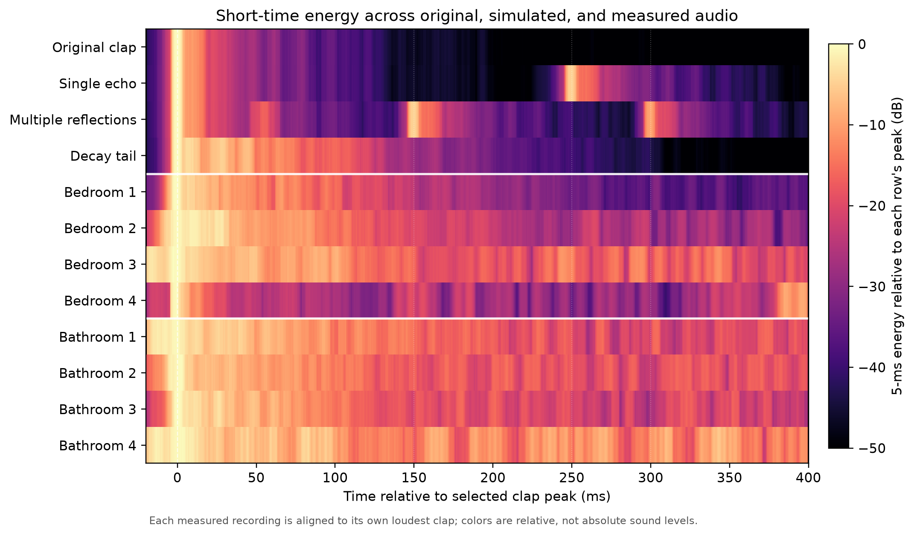
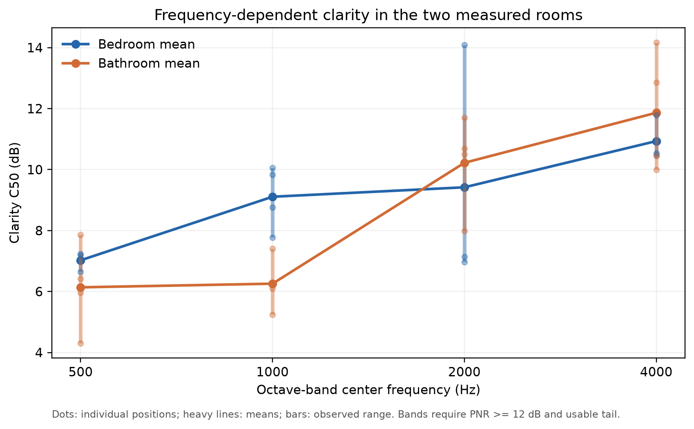
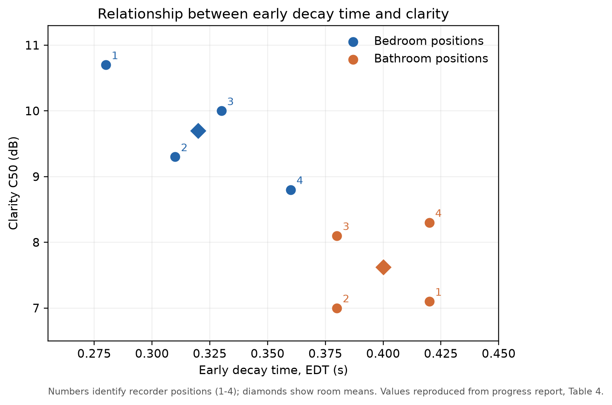

Part 2 · Analysis in three new plots
Analysis: energy, clarity and decay
Each plot answers one question: how sound energy spreads over time, whether the room comparison depends on frequency, and whether slower decay goes with lower clarity.
Plot 1 · Short-time energy across original, simulated and recorded audio

QuestionHow do distinct echoes, a dense reverberant tail, and real rooms change the way energy is spread out in time after a clap?
DataAll 12 audio signals, so all of our data types: the original clap, the three simulated outputs (single echo, multiple reflections, decay tail), the four bedroom recordings and the four bathroom recordings.
How we made it
- The three simulated outputs are recomputed by FFT convolution, \(y = x * h\), using the impulse responses on the data page.
- For every signal we square the samples and average over a centered 5-ms window: \[ E[n] = \frac{1}{M}\sum_{m\in W_n} x^2[m], \qquad E_{\text{rel}}[n] = 10\log_{10}\frac{E[n]}{\max_j E[j]}. \]
- Alignment: the original and simulated signals are aligned to the strongest clap in the original. Each room recording is aligned to its own strongest clap, because playback and recording were not synchronized. These may not be the same clap in every file.
- We show 20 ms before to 400 ms after that peak. Each row is normalized to its own maximum on a shared −50 to 0 dB color scale, so the plot compares how long energy lasts relative to each signal's peak, not absolute loudness.
What it shows
- Original clap: a sharp transient and a short fading tail, mostly dark after ~130 ms.
- Single echo: a clearly separate second bright band at 250 ms, exactly the designed delay.
- Multiple reflections: bright bands at 150 and 300 ms as designed (the 500-ms reflection is outside the window). The extra feature around 50 ms is likely a delayed copy of an earlier clap: the input has 12 claps, and convolution adds reflections to every one of them.
- Decay tail: no separate bands, just a smooth fade from bright to dark, which is what reverberation looks like, compared with discrete echoes.
- Real rooms: energy is dense and continuous, with no isolated echoes. Several rows (Bedroom 3, Bathroom 4) stay bright late in the window.
Caution. Late brightness in the recorded rows is not automatically reverberation. It can also be background noise, the phone's gain control, the next clap arriving (claps are ~450 ms apart), or alignment error. That is why we measure reverberation on the estimated impulse responses instead (Plots 2 and 3).
Plot 2 · Frequency-dependent clarity in the two rooms

QuestionDoes the ratio of early to late sound energy differ between the bedroom and the bathroom, and does the answer depend on frequency?
DataThe eight room recordings and the known input
claps.wav.How we made it
- Estimate the impulse response at each position by regularized frequency-domain deconvolution (explained on What We Learned): \[ \widehat H[k] = \frac{Y[k]\,X^*[k]}{|X[k]|^2+\epsilon}, \qquad \epsilon = 0.01\max_k|X[k]|^2. \] Inverse FFT, align to the strongest peak, crop from 2 ms before to 1 s after.
- Split into octave bands centered at 500, 1000, 2000 and 4000 Hz with 4th-order Butterworth band-pass filters, run forward and backward (
filtfilt) so there is no phase shift. - Compute clarity in each band, the ratio of energy in the first 50 ms to the energy after: \[ C_{50}(f_c) = 10\log_{10}\frac{\sum_{0\le t<50\,\text{ms}} h_{f_c}^2(t)}{\sum_{t\ge 50\,\text{ms}} h_{f_c}^2(t)}. \] A late noise floor is estimated and subtracted, and the sum stops where the response reaches it.
- Quality check: keep a band only if its peak-to-noise ratio is at least 12 dB and at least 60 ms of usable response remains. 30 of 32 band/position pairs pass; bedroom position 2 at 500 Hz (only 56 ms usable) and bedroom position 4 at 4000 Hz (PNR 11.7 dB) are dropped.
What it shows
| Band | Bedroom mean C50 | Bathroom mean C50 | Difference (bed − bath) |
|---|---|---|---|
| 500 Hz | 7.02 dB (3/4) | 6.14 dB (4/4) | +0.88 dB |
| 1000 Hz | 9.11 dB (4/4) | 6.26 dB (4/4) | +2.85 dB |
| 2000 Hz | 9.42 dB (4/4) | 10.22 dB (4/4) | −0.80 dB |
| 4000 Hz | 10.93 dB (3/4) | 11.86 dB (4/4) | −0.93 dB |
- The bedroom is clearer in the low bands, most at 1 kHz (+2.85 dB). Above 2 kHz the order flips and the bathroom is slightly clearer.
- Both rooms get clearer at higher frequencies. This is consistent with high frequencies being absorbed faster by surfaces and air, so less of their energy arrives late.
- \(C_{50}\) compares early to late energy within a band. It does not say which room has more high-frequency energy overall.
- The position ranges overlap a lot, especially at 2 kHz, so the small high-frequency differences are not strong evidence. The 1 kHz gap is the most convincing.
Limits. Each estimate includes the phone speaker and microphone, not just the room. Each position was recorded once. The rooms also differ in size, contents, source placement and recorder placement, so these are differences in this dataset, not isolated material effects.
Plot 3 · Early decay time vs. clarity

QuestionDo positions where sound dies away more slowly at first also have lower clarity?
DataBroadband (300 Hz – 8 kHz) EDT and \(C_{50}\) for all eight positions, computed in our first report from the estimated impulse responses.
How we made it
- From each estimated impulse response we compute the Schroeder energy-decay curve, \(\mathrm{EDC}(t) = 10\log_{10}\frac{\int_t^\infty h^2\,d\tau}{\int_0^\infty h^2\,d\tau}\).
- EDT (early decay time): fit a line to the EDC between 0 and −10 dB and extrapolate to −60 dB. We use EDT rather than the usual \(T_{20}\) because our noise floor is only 19–24 dB below the peak, not the 35 dB that \(T_{20}\) needs.
- \(C_{50}\): broadband version of the clarity metric from Plot 2.
- EDT on the x-axis, \(C_{50}\) on the y-axis, one point per position, plus the mean of each room. The values are the same as Table 4 of our first report, so this plot shows the relationship between two existing metrics rather than new measurements.
What it shows
0.32 s · 9.7 dB
Bedroom mean EDT · C50
0.40 s · 7.6 dB
Bathroom mean EDT · C50
- The two rooms form two separate clusters. Every bathroom position has a longer EDT (0.38–0.42 s) than every bedroom position (0.28–0.36 s), and every bathroom position has lower clarity (7.0–8.3 dB vs. 8.8–10.7 dB).
- Within the bedroom the trend is also roughly downward; within the bathroom there is no clear trend. So the relationship is mostly a difference between the rooms. That both metrics move together is expected, since both depend on how quickly the first ~50–100 ms of energy fades.
- This fits the hard, reflective surfaces of the bathroom: by Sabine's relation \(T_{60}\approx 0.161\,V/A\), a smaller room only decays faster if its absorption \(A\) does not shrink just as much.
Association, not cause. Both metrics come from the same impulse responses, and the rooms differ in several uncontrolled ways. Four positions with one take each cannot establish a general relationship. A controlled test is in our plan.
Together
Plot 1 shows all of our data on one time axis and makes the difference between discrete echoes, a modeled reverberant tail and real rooms visible. Plot 2 shows that the room comparison depends on frequency. Plot 3 shows that the bathroom consistently decays more slowly at first and is less clear. All three also show why uncontrolled real-world recordings need careful interpretation, which drives our next steps.